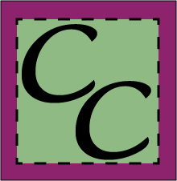
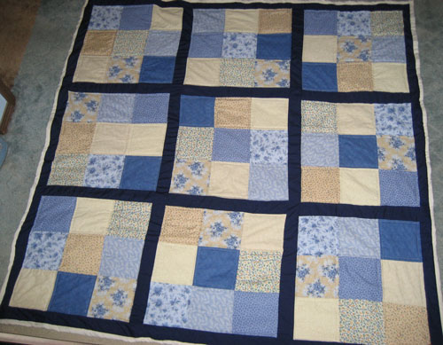
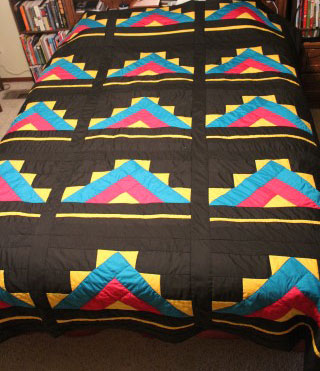

A history in pictures of my hobby (obsession)
| I began my first quilt around the time I met
Eric, in 1992. It sat uncompleted in a box which we hauled from
house to house in our many moves over the next twenty-plus years.
The first quilt I actually completed was one I made for my sister in
2009. She said she needed something to throw on the ground for
picnics and the like. I thought that sounded low-pressure enough for
me to try making a quilt for this purpose. I did complete it, with
some major wrinkles on the backing. I felt I succeeded though, since
it was a perfect quilt for throwing on the ground!
In August of 2015 I attended the Eureka Montana Quilt show by myself, so I really had the time to take it in slowly. That experience affected me greatly. Later that year, I dug the pieces of that first quilt out of the closet and decided to finish it. Little did I know, this would spark an obsession that would see me making a quilt a month by the end of the year. It has been so much fun to learn this art, and such a blessing
to be able to give them to my loved ones as gifts. I make so many
that I now sell them to pay for my fabric fund! I feel it also honors my grandmother Wanda Morton, who was a very talented
hand-quilter until her eyes wouldn't let her continue. I loved to
share my quilting journey with her. |
|
|
My first two quilts are shown below. After that are the "Early Days", 2018 - 2019 (27 quilts) 2020 (13 quilts) 2021 (23 quilts) 2022 (27 quilts) 2023 (47 quilts) 2024 (41 quilts) 2025 (34 quilts) 2026 - If you can ignore the broken image links, I'll keep adding to 2026 as I make more!
|
 |
 |
 |
| 1. Desirae's Sudoku Quilt
This was my first completed quilt, made for my sister Desirae in 2009.
This one |
2. Native American Pyramid Quilt
This was my second completed quilt. A Native American design. |
| I also made a page for some of the squedge projects
I made, which are star-shaped table toppers created with a ruler called a squedge. |
|